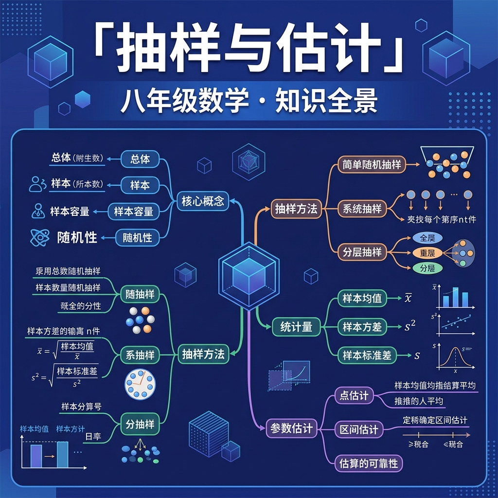

总体与样本 · 抽样方法 · 用样本估计总体

研究对象的全体。例：这10万个零件
总体中的每一个对象。例：每一个零件
从总体中抽取的一部分个体。例：抽取的200个零件
样本中个体的数量。例：n = 200
| 调查方式 | 定义 | 优点 | 缺点 | 适用 |
|---|---|---|---|---|
| 普查 | 对所有个体调查 | 准确 | 费时费力 | 小总体 |
| 抽样调查 | 对样本调查 | 省时省力 | 有误差 | 大总体/破坏性检验 |
关键特性：每个个体被抽到的概率相等，且每次抽取相互独立。
🎮 模拟抽签：袋中有编号1-20的球，随机抽取5个
例：总体N=500，需抽n=25人：
例题：某学校有高一300人，高二250人，高三200人，共750人。用分层抽样抽取75人，各层应抽多少？
| 年级 | 总人数 | 比例 | 应抽人数 |
|---|---|---|---|
| 高一 | 300 | 300/750=40% | 75×40%=30人 |
| 高二 | 250 | 250/750≈33% | 75×(250/750)=25人 |
| 高三 | 200 | 200/750≈27% | 75×(200/750)=20人 |
100名学生身高频率直方图（模拟数据）
估计：若样本中155-165cm区间频率为45%，则估计总体中该区间比例约为45%。
某工厂生产了5000个零件，从中随机抽取100个检验，发现6个次品。